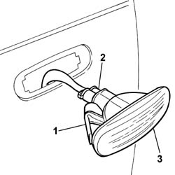
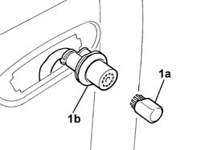

5550C54 (One), side repeater BULB left or right - R.R.
- Path
- Procedures > 55 ELECTRICAL EQUIPMENT > 5550 WARNING AND MANOEUVRING INDICATORS > 5550C TURN SIGNAL/HAZARD WARNING LIGHTS > 5550C54 (One), side repeater BULB left or right - R.R.
- Kind
- repair procedure (removal / refitting; the operation number is the code)
- Applies to
- all engines; all production periods
- Interactive page
- https://sloeber94.github.io/elrnDB-fPnd/en/#/2752988
Applies to: all engines; all production periods
 Removing
Removing
 Refitting
RefittingPlace the car on a lift.
Disconnect the battery negative terminal.
7055B90 Left front WHEEL ARCH LINER - R.R.
1. Working from the wheelarch, release the retaining clip and remove the side repeater.
2. Rotate and remove the bulb holder.
3. Remove the side repeater.

Applies to: all engines; all production periods
1. Remove the bulb (1a) from the bulb holder (1b).

Applies to: all engines; all production periods
Refitting
RemovingFit the bulb in the bulb holder.
Fit the bulb holder in the side repeater and rotate it until it locks.
Fit the side repeater in its seating on the front wing and check that it locks in place.
7055B90 Left front WHEEL ARCH LINER - R.R.
Connect the battery negative terminal.
Remove the vehicle from the ramp.